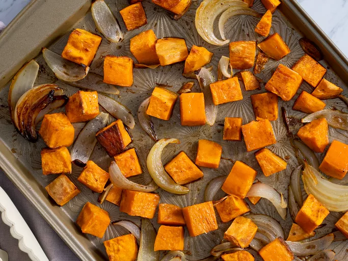

Home
Sweetpotato-Rama

Description
"If you have Sweet Potatoes in the house, you will not go hungry..."
At least that's what I tell myself given this economy. Don't leave the market
without a potato peeler and nonstick recylceable baking sheets.
You'll need a large knife, cutting board, and oven pan ready to go.
Ingredients
- A Sweet Potato
- Salt
- Pepper
- Cayenne Pepper
- Red Chipotle Pepper
- Cinnamon
- Oregano
- Basil
- Garlic Seasoning or Powder
Steps
- This starts at the market. Grab a potato you're willing to peel.
- Preheat your oven to 425 degrees Farenheit. Or boil water. Whatever method you decide to cook these
potatoes. Just know that high heat over time gets the job done.
- Grab potato. Peel.
- Chop or Cut the peeled potatoe. Look on Youtube if you don't know how use a knife
safely.
- Throw the cut potatoes on the nonstick baking sheet, on a pan, and slide
them in the oven.
- Depending on how small the pieces are cut, this could take 25-40 mins to be ready.
- Season the potatoes after they're cooked.
- Add them as a side to as a healthy addition to any meal.Your digestive tract will thank you later. Enjoy!